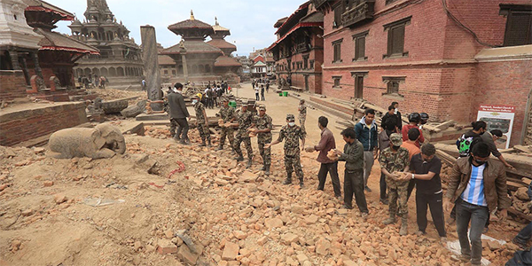
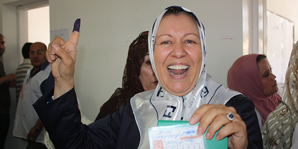
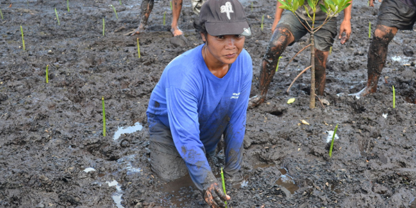

This is Development
Development lasts
After an earthquake, you rebuild your house. But to prepare for future shocks, you should think about building back your house better - right?
That's what Sustainable Development means: not just improving a society, but making improvements that last.
That's why we created nearly 1 million jobs in low-income communities last year alone, 41% for women. It's why we helped 1.4 million people living with HIV to get antiviral medication.
To make sure we have a positive impact - and an impact that lasts.
Click for more:
Development sows Democracy
Development reaps Peace
Where you work. Who you love. How you spend your life. As much as possible, you want to be in charge of the choices that affect you.
This belief is at the root of democracy and it is the main reason it supports peace: people will choose peaceful ways of affecting important decisions over violent ones.
So in 2014, we registered 18 million new voters and supported 15 national elections. Because we want you to be in charge of your own life and choices.
Click for more:
Development prevents Crisis
Development speeds Recovery
Climate change is one of the biggest challenges of our time - especially for developing countries.
Imagine cyclones destroying the farmland you use for food, year after year. Or unpredictable droughts making it impossible to know when to plant.
That's why we run climate change projects in 140 countries. It's why we supported advanced solar systems in isolated desert towns in Morocco.
To ensure that we take care of our planet, and of the generations of the future.